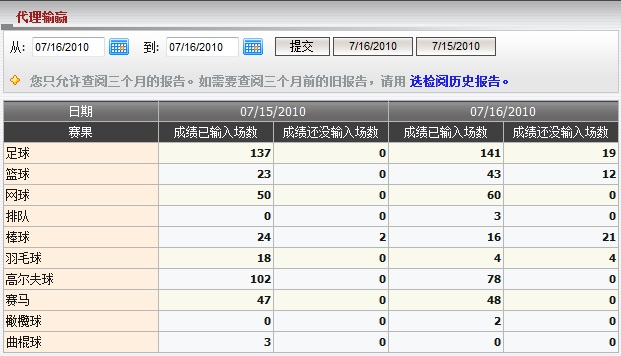
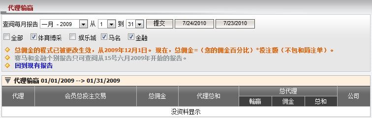
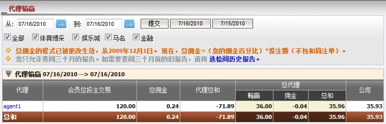
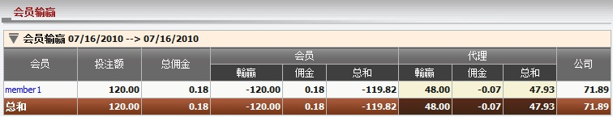
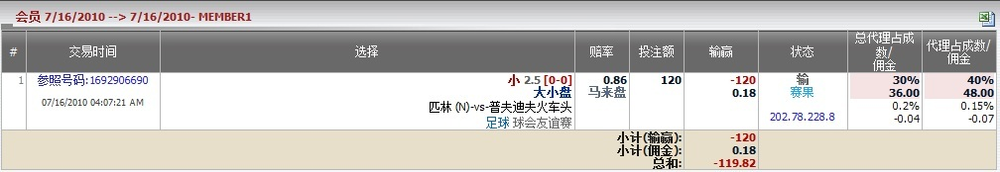

代理输赢
定义:
这份报告显示所有必要的信息, 以帮助总代理清楚了解个别会员在特定日期里的输赢。
当我们开启 "代理输赢", 页面会显示今日与昨日的个别运动类型的赛事场数, 当中包括 "成绩已输入场数" 和 "成绩还没输入场数" (图1.1)。
- 成绩已输入场数: 赛事以输入成绩之总数
- 成绩还没输入场数: 赛事还未输入成绩之总数

图 1.1
注: 如果您要查阅超过3个月的报告, 请点击 选检阅历史报告 (图1.2)。在此报告, 您可查阅过去18个月的数据。

图 1.2
在 "从" 和 "到" 选择日期, 然后点击 "提交" 以查阅指定日期的输赢报告 (图1.3)。

图 1.3
用词注解:
-
会员总投注交易: 从属个别代理的所有会员总投注额。
- 总佣金: 总代理从上线处可能得到的最高佣金数额。
- 代理总和: 总代理收到或支付予代理的数额。
- 总代理输赢: 总代理基于占成数的输赢数额。
- 总代理佣金: 扣除代理佣金后, 总代理从上线处收到的佣金数额。
- 总代理总和: 总代理包括佣金的总输赢数额。
- 公司: 总代理需支付予或从上线处接收到的总数额。
点击代理用户名以查询从属于特定的代理的会员输赢报告 (图1.4) 。

图 1.4
用词注解:
-
投注额: 所有会员的总投注数额。
- 总佣金: 代理从上线处可能得到的最高佣金数额。
- 会员输赢: 会员输赢的数额。
- 会员佣金: 会员从代理处得到的佣金数额。
- 会员总和: 会员包括佣金的总输赢数额。
- 代理输赢: 代理基于占成数的输赢数额。
- 代理佣金: 扣除会员佣金后, 代理从上线处收到的佣金数额。
- 代理总和: 代理包括佣金的总输赢数额。
- 公司: 代理需支付予或从上线处接收到的总数额。
如何理解报告:
从图1.3和图1.4中, 我们可以解出以下的输赢报告:
- Member1 输的投注 (投注额 = 120, 会员佣金 = 0.18), 所以他包括佣金的总输赢 = -119.82.
- Agent1 基于占成数的赢取数额, 佣金 = 47.93, 但他从member1得到119.82, 所以他必须支付 master1 71.89 .
- Master1 基于占成数的赢取数额, 佣金 = 35.96, 但他从agent1得到 71.89, 所以他必须支付上线 35.93.
为了理解整份的输赢报告, 我们必须深入到会员级别, 然后点击该会员的用户名 (例如: member1) 然后会员投注历史页面将被打开, 并向我们显示个别投注的的细节如下 (图 1.5):
而现在, 例子将告诉您如何计算会员该投注单的输/赢。 在现实中, 我们必须计算每张投注单的输赢及佣金, 才能获得总代理, 代理, 会员的输赢总计。

图 1.5
让我们根据member1计算master01的输赢, 总代理必须和agent1交涉的数额显示在图1.3和图1.4。 在这个例子中, member1投注于赛事 匹林 (中) -vs- 普夫迪夫火车头, 投注额 = 120, 赔率 = 0.86, 会员佣金 = 0.15%, 总代理占成 = 30%, 总代理佣金 = 0.2%, 代理占成 = 40%, 代理佣金 = 0.15%和会员输此注单。
图 1.4: 这是会员, 代理的输赢数额。
- 投注额 = 会员本金 = 120.
- 总佣金 = 投注额 * 代理佣金 = 120 * 0.15% = 0.18.
- 会员输赢 = -投注额 * 赔率 = -120 * 1 = -120.
- 会员佣金 = 投注额 * 会员佣金 = 120 * 0.15% = 0.18.
- 会员总和 = 会员输赢 + 会员佣金 = -120 + 0.18 = -119.82.
- 代理输赢 = 投注额 * 赔率 * 代理占成 = 120 * 1 * 40% = 48.
- 代理佣金 = 投注额 * 代理佣金 * (1 – 代理占成) – 会员佣金 = 120 * 0.15% * (1 – 0.4) – 0.18 = -0.07.
- 代理总和 = 代理输赢 + 代理佣金 = 48 – 0.07 = 47.93.
- 公司 = -(会员总和 + 代理总和) = -(-119.82 + 47.93) = 71.89.
图 1.3: 这是总代理输赢, 和他必须于上线/下线 (支付或收取) 交涉的金额。
- 会员投注额 = 本金 = 120.
- 总佣金 = 投注额 * 总代理佣金 = 120 * 0.2% = 0.24.
- 代理总和 = -公司如图 1.3 = -71.89.
- 总代理输赢 = 投注额 * 赔率 * 总代理占成 = 120 * 1 * 30% = 36.
- 总代理佣金 = 投注额 * [总代理佣金 * [1 – (总代理占成 + 代理占成)] – 代理佣金 * (1 – 代理占成)] = 120 * [0.2%*[1 – (30% + 40%)] – 0.15%*(1 – 40%)] = -0.04.
- 总代理总和 = 总代理输赢 + 总代理佣金 = 36 - 0.04 = 35.96.
- 公司 = -(代理总和 + 总代理总和) = -(-71.89 + 35.96) = 35.93.
注:
- 若 赔率 < 0
- 如果会员赢那么赔率 = 1.
- 如果会员输那么赔率 = |当前赔率|。
- 若 赔率 > 0
- 如果会员赢那么赔率 = 当前赔率。
- 如果会员输那么赔率 = 1。
- 如果投注类别为波胆, 1x2, 总进球, 半场/全场, 优胜冠军, 混合过关那么赔率 = 当前赔率 - 1。